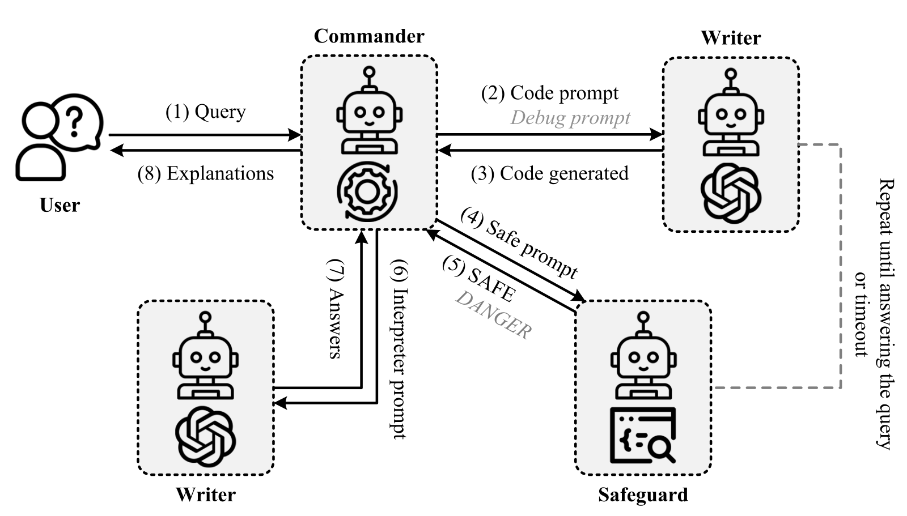

Decision Information Meets Large Language Models: The Future of Explainable Operations Research
EOR connects what-if analysis with explanations of optimization decisions, using Decision Information to quantify changes in the underlying model.

EOR routes what-if requests through a Commander, Writer, and Safeguard, then returns explanations after the updated code passes verification.
01 / Research question
When a user changes an operational requirement, the optimization model and its solution may both change. How can a system explain which model elements were revised, quantify the structural change, and clarify why the new decision follows?
02 / Approach
EOR treats the parameters and constraints specified in a what-if query as Decision Information. It converts the original and revised programs into a standardized LP representation, represents variables and constraints as a bipartite graph, and uses normalized graph edit distance to quantify changes in model structure and attributes. The distance measures changes in the model representation; changes in objective value or operational benefit are assessed separately. This gives explanation a measurable reference for discussing model changes. A Commander coordinates the query and workflow, a Writer revises code and explains the changes and results, and a Safeguard checks the program before execution. The system explains both why the code was updated and how those updates affect the resulting decision.
03 / Research scope
An industrial benchmark tests model updates under what-if queries using four GPT-4 versions in zero-shot and one-shot settings. Modeling accuracy is assessed separately from explanation quality. For GPT-4o, the latter is evaluated on correctly modeled cases through both automated and expert scores for explanations of correctness, explanations of results, and overall quality.
Experimental results
Modeling accuracy under zero-shot and one-shot settings
| Setting · Backbone | Standard | OptiGuide | EOR |
|---|---|---|---|
| Zero-shot · GPT-4 | 18.67 | 30.33 | 75.67 |
| Zero-shot · GPT-4-1106-preview | 75.33 | 36.00 | 81.67 |
| Zero-shot · GPT-4-0125-preview | 68.33 | 47.33 | 87.33 |
| Zero-shot · GPT-4-Turbo | 63.00 | 30.33 | 88.33 |
| One-shot · GPT-4 | 71.67 | 75.00 | 90.33 |
| One-shot · GPT-4-1106-preview | 69.67 | 55.33 | 87.67 |
| One-shot · GPT-4-0125-preview | 76.00 | 69.33 | 92.00 |
| One-shot · GPT-4-Turbo | 88.00 | 69.33 | 95.33 |
Modeling accuracy compares optimization outcomes with the reference results, rather than comparing source code. The experiments use four GPT-4 model versions with fixed temperature and shared one-shot examples. The benchmark contains internally developed queries.
EOR leads the compared methods across the reported backbones and example settings. The pattern supports its ability to turn what-if requests into working model revisions. Assessing explanation quality separately then addresses the next requirement: whether the system can make the revised model and decision understandable to the user.
Explanation quality · Zero-shot
| Method | Correctness · Auto | Correctness · Expert | Results · Auto | Results · Expert | Overall · Auto | Overall · Expert |
|---|---|---|---|---|---|---|
| Standard | 0.12 | — | 6.98 | 6.98 | 5.36 | 5.63 |
| OptiGuide | 0.69 | — | 7.93 | 7.90 | 6.31 | 6.59 |
| EOR | 9.76 | 9.86 | 9.41 | 9.47 | 9.47 | 9.47 |
Only correctly modeled cases are evaluated. Correctness refers to explanations of code updates; Results refers to explanations of the resulting decisions. Dashes denote expert scores not reported in the paper.
The advantage is especially clear in explanations of code-update correctness. This highlights a distinct part of explainable optimization: users need to understand how a requested change was translated into model edits as well as the decision that follows. The automated and expert scores show a consistent pattern in this setting.
Explanation quality · One-shot
| Method | Correctness · Auto | Correctness · Expert | Results · Auto | Results · Expert | Overall · Auto | Overall · Expert |
|---|---|---|---|---|---|---|
| Standard | 0.34 | — | 7.10 | 6.90 | 5.54 | 5.37 |
| OptiGuide | 0.20 | — | 7.60 | 7.61 | 5.96 | 6.05 |
| EOR | 9.61 | 9.72 | 9.30 | 9.35 | 9.33 | 9.35 |
Only correctly modeled cases are evaluated. Correctness refers to explanations of code updates; Results refers to explanations of the resulting decisions. Dashes denote expert scores not reported in the paper.
The explanation advantage persists when a worked example is supplied. The pattern suggests that explanation benefits from an explicit workflow connecting the request, model revision, and solution interpretation, alongside examples of the desired output.
Citation
@inproceedings{eor2025,
title = {{Decision Information Meets Large Language Models: The Future of Explainable Operations Research}},
author = {Yansen Zhang and Qingcan Kang and Wing Yin Yu and Hailei Gong and Xiaojin Fu and Xiongwei Han and Tao Zhong and Chen Ma},
booktitle = {International Conference on Learning Representations},
pages = {65698--65722},
year = {2025},
url = {https://proceedings.iclr.cc/paper_files/paper/2025/hash/a48e5877c7bf86a513950ab23b360498-Abstract-Conference.html}
}